บทที่ 22 / 29
กูเรนทาวน์+บ้านโปเกมอน<Cinnabar Island+Pokemon Manshion>
❖
บนเกาะนี้จะมีสถานีวิจัยโปเกมอนอยู่ ให้เข้าไปในห้องขวาสุด คุยกับนักวิจัย เขาจะช่วยคืนสภาพฟอสซิลที่เราเก็บไว้กลายเป็นโปเกมอนเลเวล 5 (ฟอสซิลที่เราเลือก จาก2อันในภูเขาโคสุคิมิ)
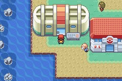
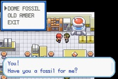
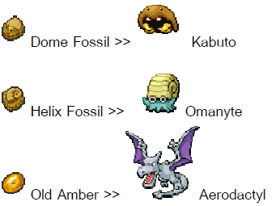
เราไม่สามารถเข้ายิมได้ทันที ต้องหากุญแจที่จะเปิดยิมเสียก่อน ให้เข้าไปในบ้านโปเกมอน(ด้านซ้ายของยิม)ให้เราขึ้นไปชั้น3 แล้วสำรวจรูปปั้นเพื่อกดสวิตซ์ อันที่อยู่ใกล้บันไดมุมบนซ้าย(ที่จริงในชั้นนี้ก็มีอันเดียวแหละ)จากนั้นให้ไปทางมุมล่างขวา แต่อย่าขึ้นบันได ให้เราขึ้นมาตรง ดร.ที่ใส่แว่นก่อน (ณ จุดใกล้บันไดนั้น) จะสังเกตว่า ตรงด้านล่างจะมีรู2รู คือ2เลน(ขวา) และ3เลน(ซ้าย) ใหเ้ ราเข้าชอ่ งซ้ายท่เี ป็น3เลน จากนั้นก็ตามกดสวิตซ์ต่อได้เลย (ไม่ยากเกินความสามารถ) แล้วขึ้นไปให้ถึงชั้นบนสุด กดสวิตซ์เพื่อเปิดประตูเข้าไปข้างในสุด
บนโต๊ะจะมี Secret Key ให้เก็บ
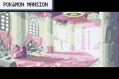
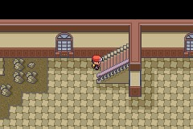
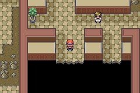
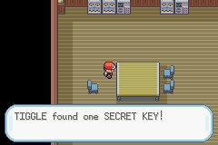
พอได้แล้วให้เข้ายิม หัวหน้ายิมนี้ชื่อคาสึระ<Blaine>จะใช้โปเกมอนไฟ โปเกมอนที่แนะนำคือ น้ำ ดิน หินโดยยิมนี้จะต้องตอบคำถามเป็นข้อๆ (คำตอบตามลำดับ ต่อไปนี้ ถูก ผิด ผิด ผิด ถูก ผิด) เมื่อตอบ
ผิดก็ต้องสกูั้บเทรนเนอร์ที่ยืนอยู่ เข้าไปข้างในสุดเพื่อสู้กับหัวหน้ายิม
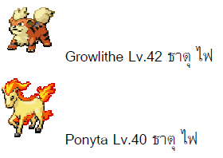
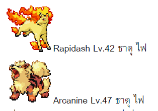
เมื่อชนะจะได้ Volcanobadge ที่เพิ่มค่า Special ให้โปเกมอนของเราทุกตัว พร้อมตังค์4700เยน และ TM38 Fire Blast
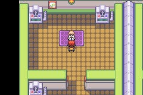
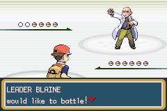
พอชนะแล้วให้เราออกจากยิม มาซากิจะชวนเราไปยังเกาะลับ1<One Island> ให้เราตอบตกลง จะมีเรือมารับ(ถ้าเราปฏิเสธ มาซากิจะไปรอในโปเกมอนเซนเตอร์แทน)
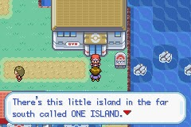
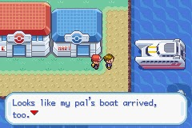
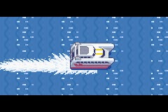
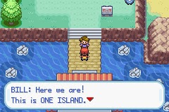